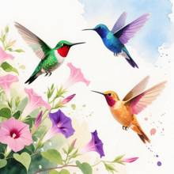
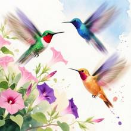

Attribute — A beautiful watercolor painting depicts three colorful hummingbirds ho
A beautiful watercolor painting depicts three colorful hummingbirds hovering among the flowers, their wings vibrating at high speed, and the picture is full of movement.

Judge — Direct
- FAILAttribute - Quantity — The image contains four colorful hummingbirds, not three as requested by the prompt. Two of the hummingbirds have plumage with a gradient of red, orange, and yellow on their chests, while the other two have plumage that is primarily blue and green.
- PASSStyle — The image is rendered in a style that emulates a watercolor painting, characterized by soft edges, blended colors, and a background with a washed-out appearance, suggesting the use of water-based pigments on paper.
Judge — Continuum
- PASSAttribute - Quantity — The image displays exactly three hummingbirds. One, on the left, is primarily green and white with a bright red throat. A second, at the top right, is predominantly blue and purple. The third, at the bottom right, is mostly orange and yellow with a pinkish-red throat. All three birds are colorful.
- PASSStyle — The image is created in a watercolor painting style. This is visible through the soft color washes in the background, the translucent quality of the pigments on the flowers and birds, the feathered edges of some colored areas, and the presence of paint splatters around the subjects.
What the agent did
Thinking
The user wants a watercolor painting of three colorful hummingbirds hovering among flowers, with wings vibrating at high speed, full of movement. Per the benchmark policy, I must use qwen-image for generation and editing. Let me generate the image first with a detailed visual prompt.
Step 1 — `generate_image`
{
"prompt": "A beautiful watercolor painting of three colorful hummingbirds hovering among blooming garden flowers. One hummingbird with iridescent emerald-green and ruby-red throat feathers, one with sapphire-blue and violet plumage, one with golden-orange and magenta coloring. Their wings are painted as soft translucent blurs with sweeping motion strokes, suggesting rapid vibration. Loose fluid brushwork, wet-on-wet bleeds, delicate splatters and drips, white paper texture visible. Trumpet-shaped pink and purple flowers, green leaves, dynamic diagonal composition full of movement and energy, light airy background with soft washes of sky blue and cream.",
"model": "qwen-image"
}Result img_0

Thinking
The first generation looks quite good. Let me inspect it against the prompt: - Watercolor painting: ✓ — loose washes, splatters, drips, paper texture visible - Three colorful hummingbirds: ✓ — green/ruby-throated, blue/violet, orange/golden with magenta - Hovering among flowers: ✓ — pink and purple trumpet flowers, green leaves - Wings vibrating at high speed: partially — wings are spread and fairly defined. The orange bird's wings have some blur/motion feel. The blue bird's wings are fairly crisp. Could add more motion blur strokes to emphasize vibration, but the wings being outstretched is typical of hummingbird depictions. - Full of movement: composition is dynamic, diagonal arrangement, splatters. Honestly this is quite good already. The wings could be slightly more blurred to suggest vibration, but they're already reasonably dynamic. The prompt asked for "wings vibrating at high speed" — the orange bird shows blur, the green and blue ones have more defined wings. I could try one targeted edit to add subtle motion blur to the wings, but that risks degrading a good result. Let me mark this as best first, then consider whether an edit would help. Per the policy: "Good enough is a stop condition." The image has all elements: watercolor style, three colorful hummingbirds, flowers, movement. The wings of the green and blue birds are somewhat static-looking (fully extended, crisp edges), but hummingbirds in art are often depicted this way and it still reads as hovering. There's motion in the splatters and the orange bird's wings. I think one gentle edit to enhance wing motion blur could improve adherence to "wings vibrating at high speed... full of movement." Let me try it with edit_image on qwen-image. If it makes things worse, I revert to the marked best. Actually, let me think about the risk. The edit instruction would be something like: "Make all three hummingbirds' wings appear as soft translucent blurred fans with sweeping motion streaks, suggesting rapid vibration." That's a delta describing only the change. FLUX.2 responds well to that; qwen-image edit should too. Let me mark best first, then try the edit.
Model
The first generation already captures the brief well: loose watercolor technique with washes, splatters and visible paper texture, three distinctly colorful hummingbirds (emerald/ruby, sapphire/violet, golden-orange/magenta), and trumpet flowers in pink and purple. One thing that could be stronger: the wings on the green and blue birds are fairly crisp, while the prompt emphasizes wings "vibrating at high speed" and a picture "full of movement." Let me mark this as my best so far, then try one targeted edit to enhance the wing-motion blur.
Step 2 — `mark_best`
{
"image": "img_0",
"reason": "All requested elements present: watercolor style, three colorful hummingbirds, flowers, dynamic composition. Good baseline before attempting motion-blur improvement."
}Thinking
Now try one targeted edit: make wings appear as blurred motion fans. Describe only the change.
Step 3 — `edit_image`
{
"image": "best",
"prompt": "Make the wings of all three hummingbirds appear as soft translucent blurred fans with sweeping watercolor motion streaks trailing from the wingtips, as if vibrating at high speed. Keep the birds' bodies, colors, flowers, and background unchanged.",
"model": null
}Result img_1

Thinking
The edit worked well — all three hummingbirds now have blurred, fan-like wings with motion streaks suggesting rapid vibration. The bodies, colors, flowers, and background are preserved. The image now better matches "wings vibrating at high speed, full of movement." Let me check details: - Green bird: wings now blurred fans ✓ - Blue bird: wings blurred with purple streaks ✓ - Orange bird: wings blurred ✓ - Everything else preserved ✓ This is better than img_0 for the prompt. Mark img_1 as best and stop — all elements present and correct.
Step 4 — `mark_best`
{
"image": "img_1",
"reason": "Improved version: all three hummingbirds now show blurred, vibrating wings conveying high-speed motion; all other elements (watercolor style, colors, flowers, composition) preserved."
}Thinking
Done. The final image matches the prompt fully. Summarize briefly.
Model
The final watercolor painting is complete and matches the prompt: - **Three colorful hummingbirds** — emerald-green with ruby throat, sapphire-blue with violet wings, and golden-orange with magenta accents - **Wings vibrating at high speed** — all wings rendered as soft, translucent blurred fans with sweeping motion streaks - **Among the flowers** — pink and purple trumpet blooms with lush green foliage - **Full of movement** — dynamic diagonal composition, paint splatters, drips, and loose wet-on-wet washes on visible paper texture The marked image (img_1) is the submitted result.